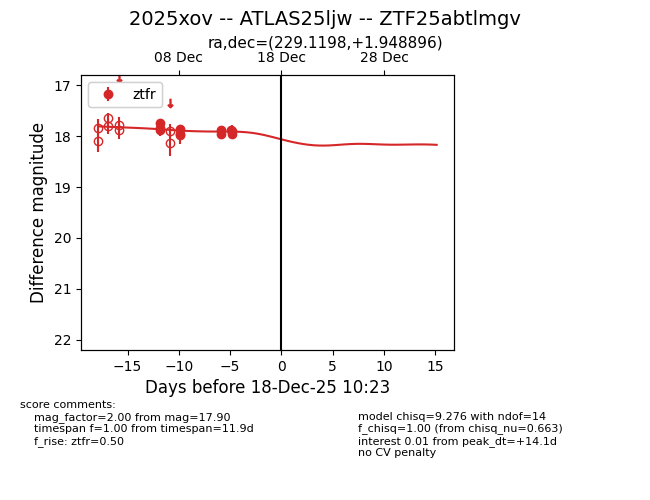
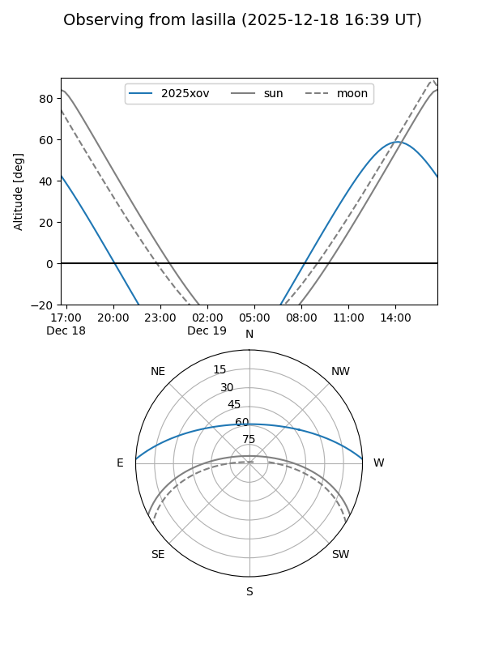
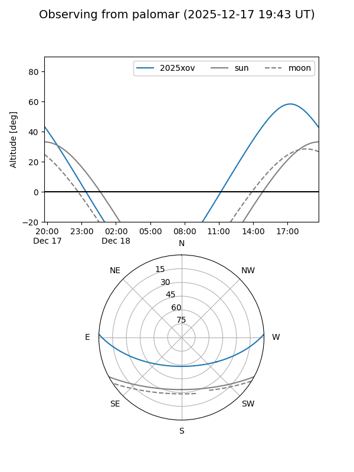

2025xov
Target 2025xov at 2025-12-18 11:17
Aliases and brokers:
FINK: fink-portal.org/ZTF25abtlmgv
Lasair: lasair-ztf.lsst.ac.uk/objects/ZTF25abtlmgv
ALeRCE: alerce.online/object/ZTF25abtlmgv
TNS: wis-tns.org/object/2025xov
YSE: ziggy.ucolick.org/yse/transient_detail/2025xov
alt names
ZTF25abtlmgv (ztf,fink_ztf)
2025xov (tns,yse)
ATLAS25ljw (atlas)
Coordinates:
equatorial (ra, dec) = 229.1198,+1.94890
equatorial (HMS+DMS) = 15:16:28.74,+01:56:56.03
galactic (l, b) = (3.2295,+47.11521)
Photometry
last ztfr=17.90
9 ztfr detections
Lightcurve

Visibility


Additional plots